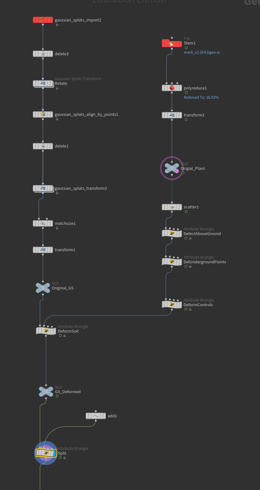

Gaussian Splat with POP Net, to be continue with more complex simulation
Animated Trees
Gaussian Splat from photos limitation
The Gaussian Splat only works from just one angle
Methods to import data from Gaussian Splat to Unreal Engine 5
VAT: Light weight, casting shadow, autommatically animated but less realistic
VAT with stylization
GSplat: Postshot required, not casting shadow, heavy, but more details and realistic
Deform GSplat Dirt
Deform gaussian splat dirt using VEX code in Houdini
Visualize in Houdini
Final look of the dirt in Postshot

Pyro node setup
DeformControls
Runs on plant geometry to prepare deformation data passed to the soil wrangle.
Maps penetration depth to a 0-1 strength value, and computes an outward and upward push direction per point.
DeformSoil
Runs on soil geometry, looping over all plant control points to accumulate deformation influence.
Each control point contributes a radial push weighted by distance falloff and strength, and the total displacement moves soil points outward and upward.
Splat orientations are also rotated via quaternion to match the deformation direction.
Split
Reads an origin point from input 1 and pushes soil points radially outward within a set radius,
using a smooth distance falloff with adjustable sharpness and an optional vertical lift.
Difficulty
A bit hard to control and not very realistic because it is not the real simulation
AI Style transfer with image sequence
The custom AI Style Transfer tool very well with still image but not with image sequence
Stylized still image
Source Image
Stylized png sequence: result shift every frame because the tool regenerate every frame